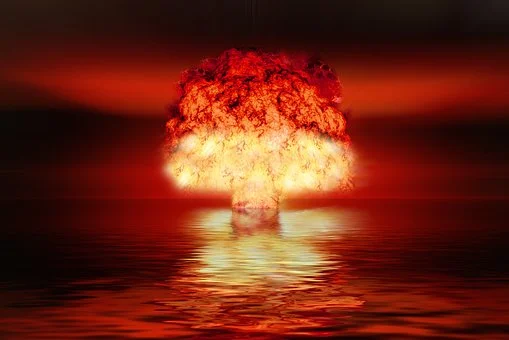

1학년 1반님들 그동안 강녕하셨나요? 저는 아닙니다만. 이건 제 연습용 html웹페이지인데용.
음 뭔 말을 써야할 지 모르겠는뎅... 같이 열심히 학교를 탈출해봅시다!
일탈
탈출
폭파
Deviation
exodus
Explosion

원자폭탄 만드는 방법(출처: 킹무위키)
1. 핵분열 물질을 모은다. 우라늄의 경우 원광이 많이 필요하고 그거 분류 정제하는데 꽤 공이 많이 들지만, 플루토늄의 경우는 그냥 원자로 하나하고 차폐된 소규모 재처리 시설로도 가능하다. 영변에 있다는 것이 그거. 영변에는 폭탄만들기 딱 좋은 RBMK와 더불어 마그녹스도 있었다.
2. 폭탄을 설계하고 제작한다. 이건 내파가 가능한 형태의 소형 폭탄을 만드는 것과 동일하다. 나가사키에 떨어진 Fatman이 이 물건. 단, 내파가 됐는지 안됐는지는 제대로 된 데이터를 가지고 있는 경우 컴퓨터 시뮬레이션만 갖고도 된다지만 (미국) 그게 없는 나라는 그냥 터뜨려보기 전엔 모른다. 문제는, 이 내파를 극도로 고르고 정확하게 생성해야 하는데, 이것이 매우 힘들다.정밀한 내파반사용 렌즈를 만들어야 한다. (중성자반사재가 있으면 더 쉽다.)
3. 그걸 나를 준비를 한다. 전략 폭격기-ICBM-SLBM 세가지를 다 갖고 있는 나라는 몇 안된다. 그리고 제대로 경량화가 안된 초기형 원자폭탄은 미사일에 싣기엔 너무 무겁다. 폭격기에 싣기도 사실 벅차다.
4. 여기까지가 기술적인 문제고, 이걸 다 할 자신이 있으면 도전하기 전에 미국을 말이나 돈이나 무력 중에 하나 이상을 동원해 뚫어야 한다. 미국 입장에서는 지금 핵 있는 나라도 부담되는 판에 더 생기면 어쩌잔 말이야. 따라서 핵무기 확산 방지에 편집증적인 집착을 가진 미국의 생각을 돌리는건 전혀 쉬운 일이 아니다.[10] 사실, 1~3은 어떻게든 되는 나라는 그럭저럭 있으나, 대부분이 4에서 막혀서 관두고 있기에 핵무기 보유 국가가 얼마 없는 것이다.